The brief
Create a supportive space for everyday workplace experiences, with a concept brief, UX maps, a visual identity, interface designs, a business plan and a front end demonstration.
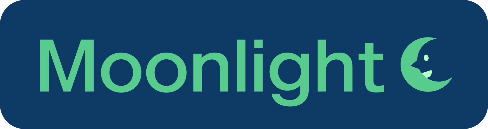
An app concept for sharing everyday work moments, finding another perspective and feeling a little less alone at work.
Step into the story ↓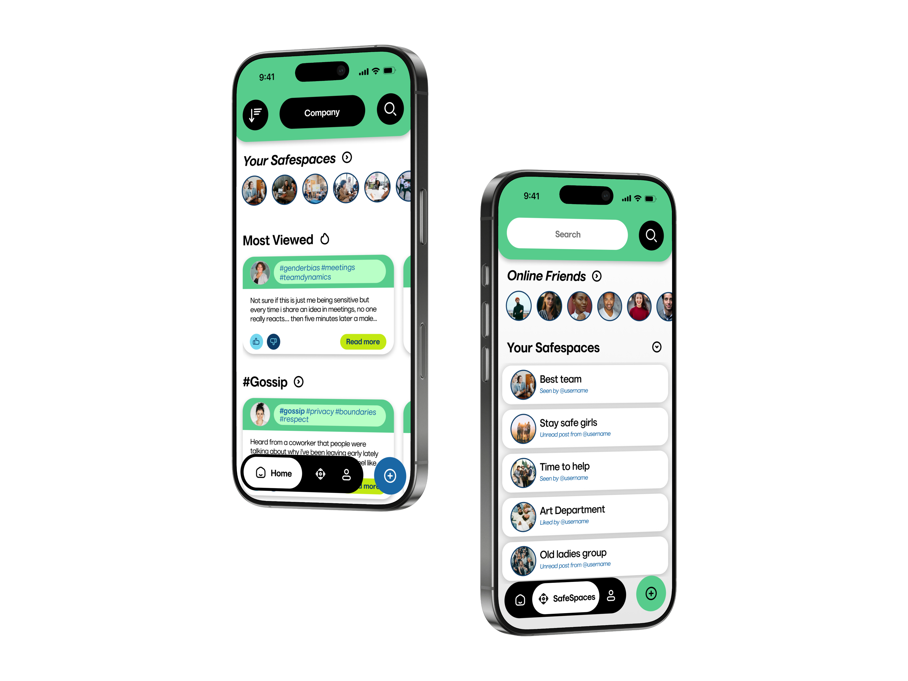
For Digital Product 2, I explored how a digital product could make difficult workplace conversations easier to start. I took Moonlight from research and concept development through interface design and a front end demo.
The starting point ↗Create a supportive space for everyday workplace experiences, with a concept brief, UX maps, a visual identity, interface designs, a business plan and a front end demonstration.
Gossip, awkward moments and unclear communication can feel too small for a formal complaint, yet still affect someone’s day. How could people share those moments and gain perspective before tension builds?
Employees who want to share, reflect or support a colleague, and managers who need a clearer view of workplace themes. The concept targets medium to large companies that care about communication and inclusion.
I combined desk research, interviews with people close to me and professor feedback. These exploratory inputs helped me approach a sensitive topic and narrow the concept.
I looked at how people share opinions on Reddit and workplace platforms such as Blind, then compared the idea with formal feedback and employee culture tools. The opportunity was a more casual space for everyday reflection.
I spoke with people I knew so they could discuss sensitive workplace topics more freely. Their advice helped me consider the app from an employee’s perspective and narrow its functionality. These were exploratory conversations, rather than a representative study.
Professor feedback pushed me to consider how the space could stay supportive rather than become another source of gossip. Moderation, reporting and clear choices about identity became part of the experience I mapped.
I mapped employees, managers and support roles across the user journey, story map and information architecture. The original UX board shows how those perspectives connect.
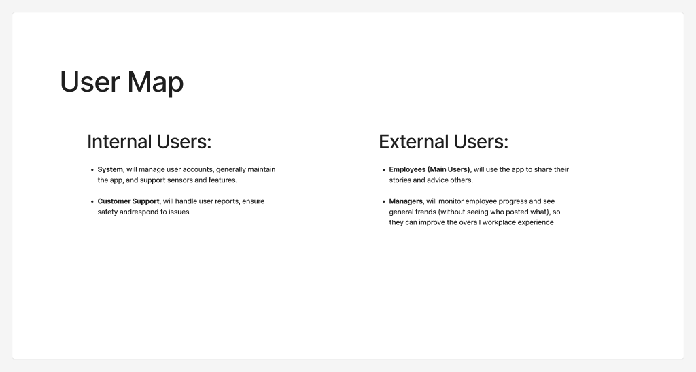
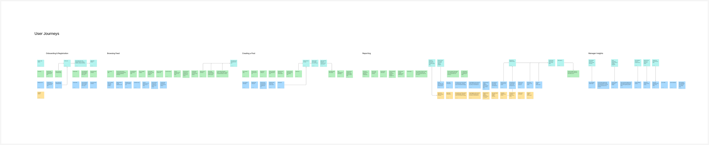
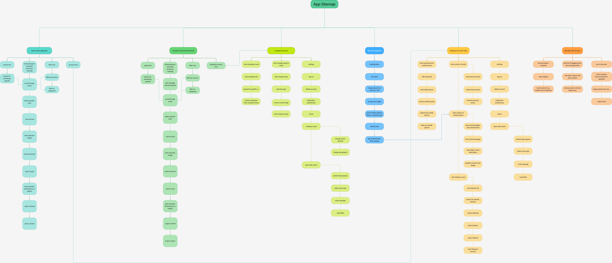
I mapped the employee journey alongside manager and support responsibilities, connecting a simple posting experience with the less visible work of keeping the community respectful.
The design brings together Home, SafeSpaces, New Post and Account, with a separate manager insights view. Hashtags, search and filters help people find relevant experiences, while smaller SafeSpaces offer a more focused setting for conversation.
Browse a workplace story, open it, read other perspectives and add a comment. For a new post, choose a topic, write the experience, decide whether to share anonymously and select its audience. I wanted browsing to feel useful even before someone was ready to post.
I also mapped reporting, review and manager responsibilities. The intended manager view focuses on trends rather than exposing who wrote an anonymous post. These workflows belong to the wider product concept and would need to be developed alongside its access controls.
The interface translates the concept into familiar social patterns, with workplace context, smaller conversation spaces and room for supportive replies.
Hashtags give a story context before you open it. The full post makes room to read, reflect and reply, with an anonymity choice at the point of commenting.
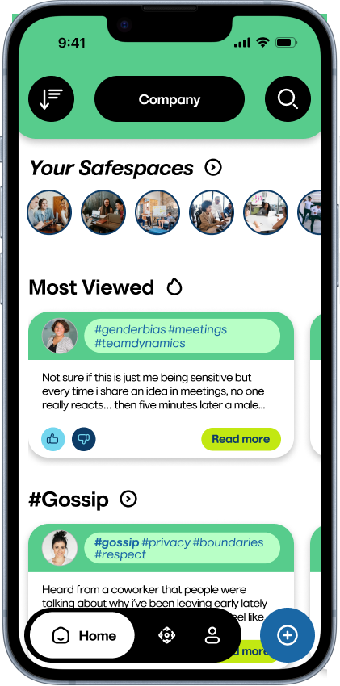
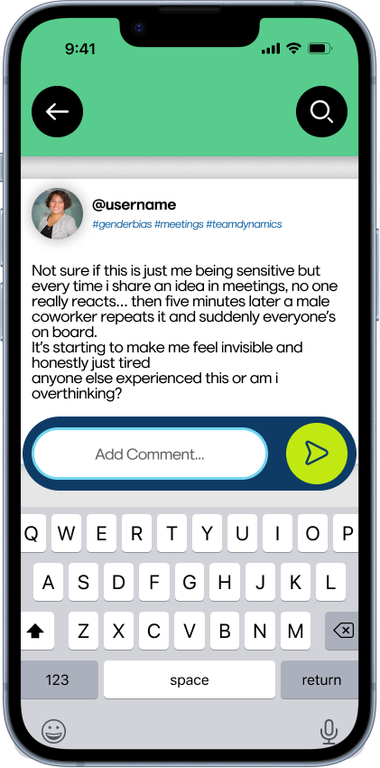
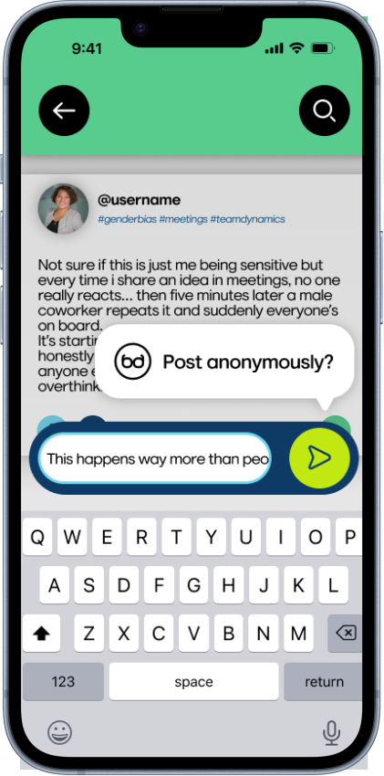
The interface pairs a green palette with blue and lime accents. Rounded post cards, topic groups and familiar navigation make the sensitive subject feel more approachable. I also explored adapting the interface to a company’s own branding.
The post composer brings the topic, written experience and optional photo into one view. Camera and identity controls stay close to the content, so those choices are part of composing the post.
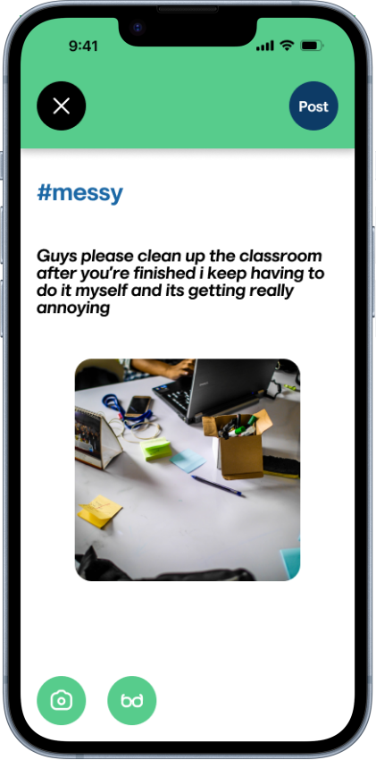
SafeSpaces brings smaller groups into the experience. The overview shows online friends, group names and activity cues, while the group view gives each conversation room for posts, reactions and replies.
The intended journey allows someone to start by reading and join in when they feel ready.
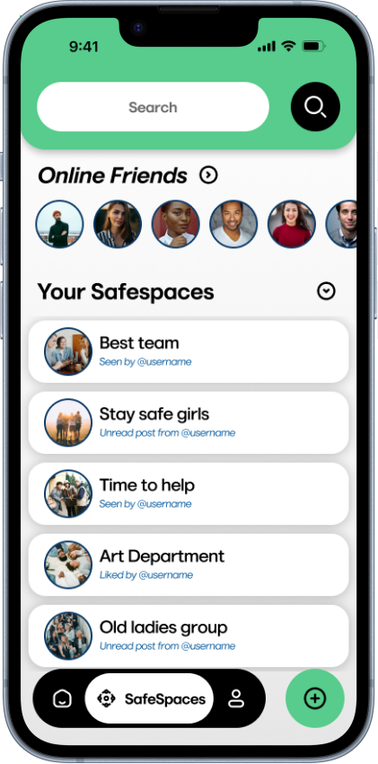
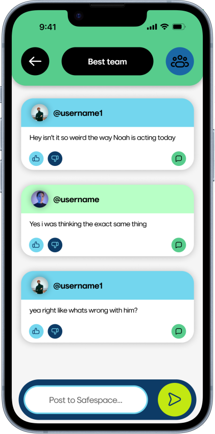
The account view brings previous posts and achievements together. Badges such as Brave Start, Observer and Peacekeeper explore how supportive participation could be recognised.
The manager concept offers another perspective on workplace themes, including comparing a topic with the previous week. It is part of the wider app design, while Account is one of the three screens I developed for the front end demo.
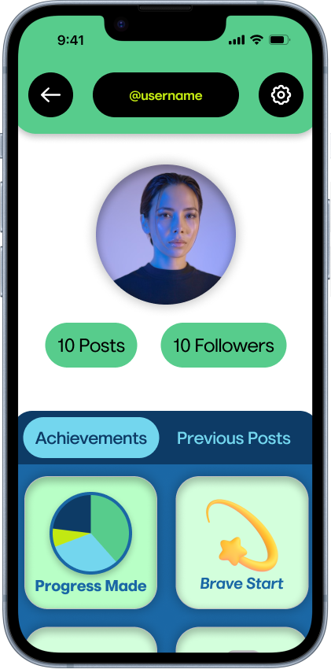
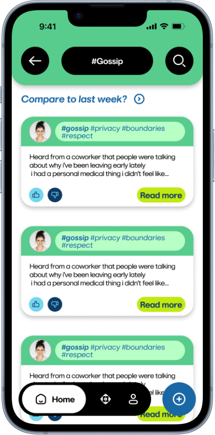
I also developed the front end for the home feed, post detail and account screens, using HTML and Sass in VS Code. This demo explores the interface, while the wider app designs include SafeSpaces, creating posts and manager insights. A connected backend and a live company deployment are outside this demo’s scope.
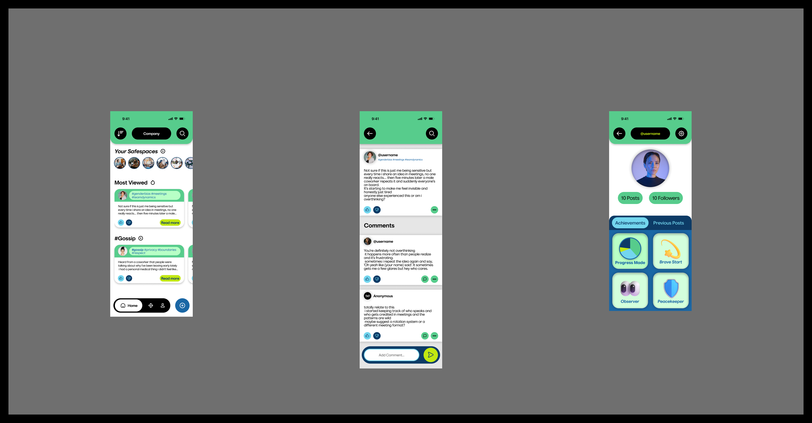
Moonlight began as a training idea. The final direction shifted toward sharing real experiences and reflecting together, informed by exploratory conversations and professor feedback.
The earlier concept used workplace scenarios, multiple choice responses and immediate feedback to practise handling difficult situations. It centred on learning how to respond.
The final concept centres on real stories, comments and smaller SafeSpaces. Instead of prescribing one answer, it gives colleagues room to offer perspective and support.
The emphasis moved from completing a lesson to making sense of an everyday work moment. That changed the core experience from a training flow into a conversation.
Giving people room to speak also requires boundaries. Identity choices, reporting and moderation need to work together if the space is to support trust.
The next step would be to test whether employees understand the audience and anonymity choices, can find relevant stories and feel comfortable contributing. Those tests would help assess comfort and clarity before building a connected product.
I completed the project individually, bringing together the research, UX maps, visual identity, app designs, business plan and front end demo. The result is an exploration of workplace connection, rather than a launched service with measured impact.
This project pushed me to think beyond the visible screens. Designing a supportive feed also means thinking about who can see a post, how a report is handled and how the experience feels to someone who only wants to read.
I would broaden the research beyond people I know, test the core journeys with employees and managers, and evaluate the moderation and privacy model before taking the wider concept into development.